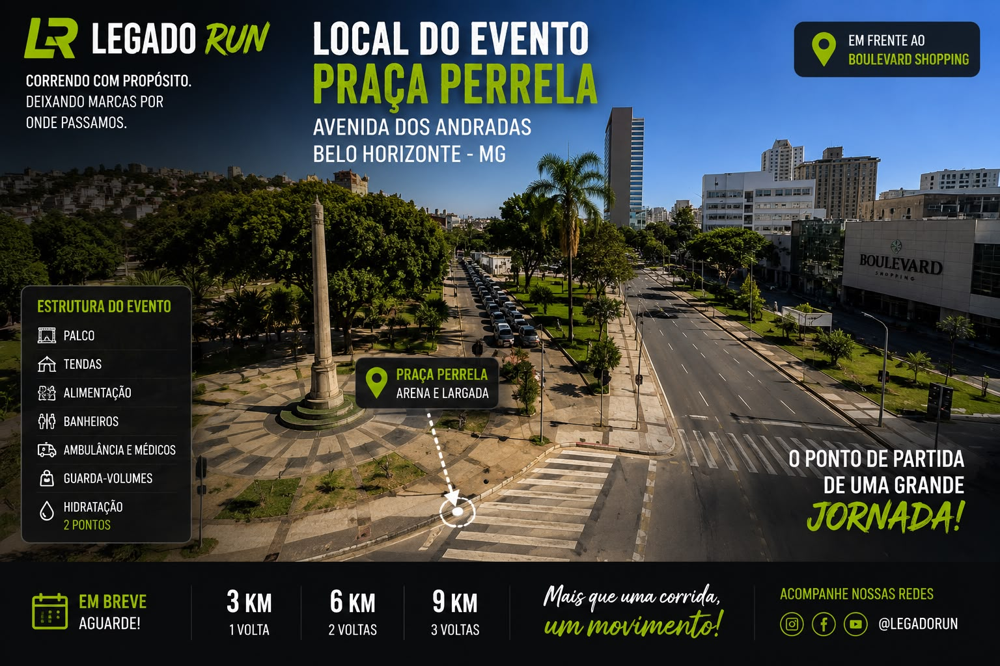
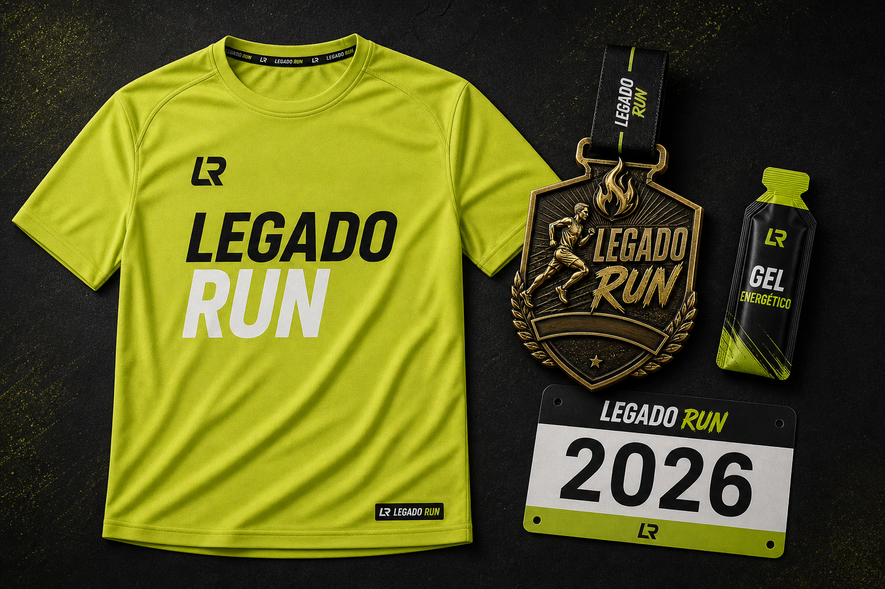
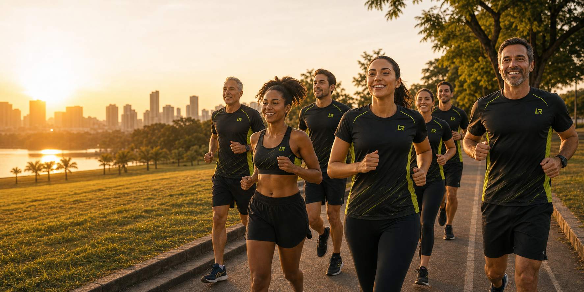
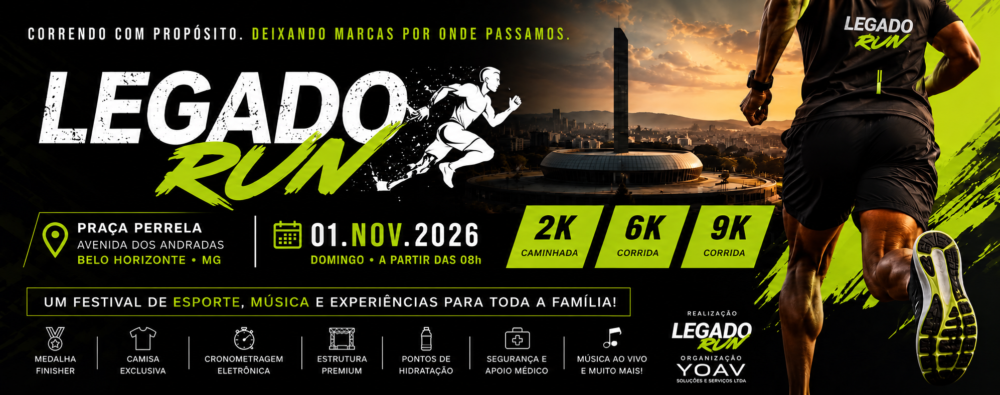
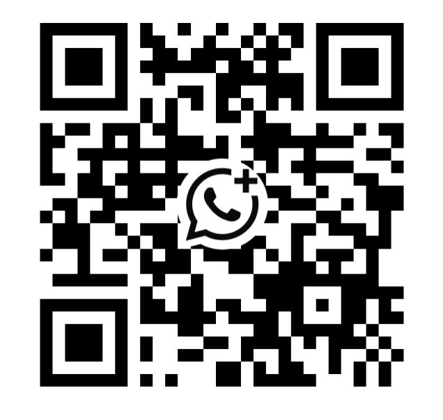

Construção da comunidade, marcas fundadoras e identidade do movimento.

A primeira edição começa agora.
As empresas que acreditarem na primeira edição serão lembradas desde o início.
Correndo com propósito. Construindo um legado.
Drone
Arena
Corredores
Palco
Famílias
Cobertura oficial
Não estamos vendendo um espaço de patrocínio.
Estamos convidando empresas para entrar no início de uma história.
Quem somos
O LEGADO RUN nasceu para reunir pessoas em torno de saúde, superação, amizade e propósito.
O LEGADO RUN é um movimento. A corrida é apenas o ponto de encontro entre pessoas que desejam viver melhor, cuidar do corpo, fortalecer relações e deixar marcas por onde passam.
A primeira edição será o marco inicial de uma comunidade que une atletas, iniciantes, famílias, igrejas, academias, empresas e influenciadores em uma experiência de esporte e propósito.
Para uma empresa, estar nessa primeira edição significa mais do que aparecer. Significa ser reconhecida como uma das marcas que ajudaram esse movimento a sair do papel.
Por que nasceu
Porque correr transforma quando existe propósito por trás de cada passo.
A visão do LEGADO RUN é criar uma experiência anual que incentive saúde, disciplina, comunhão e superação. Um evento que começa em Belo Horizonte, mas nasce com mentalidade de crescimento.
O futuro
Nossa visão é transformar o LEGADO RUN na maior corrida cristã do Brasil.
Mais atletas, novas parcerias, maior cobertura e calendário recorrente.
Uma corrida cristã reconhecida por experiência, organização, propósito e impacto.
Linha do tempo da visão
O LEGADO RUN começa em 2026, mas nasce com plano de crescimento.
O início oficial do movimento em Belo Horizonte.
Expansão da comunidade e fortalecimento das marcas fundadoras.
Novas cidades, mais atletas e maior presença institucional.
Uma corrida cristã reconhecida por propósito, organização e impacto.
Daqui a cinco anos, quando o LEGADO RUN estiver reunindo milhares de corredores, sua empresa poderá dizer:
Nós acreditamos desde o começo.
O LEGADO RUN em números
Uma primeira edição planejada para gerar presença, conteúdo e relacionamento, com projeções apresentadas de forma transparente.
A circulação total considera atletas, acompanhantes, visitantes, equipes, prestadores de serviço, expositores e circulação espontânea no entorno ao longo da programação.
Quem estará lá?
Um público que se conecta com marcas presentes na vida real.
Empresários
Famílias
Corredores
Academias
Igrejas
Empresas
Influenciadores
Praticantes de caminhada
Profissionais da saúde
Grupos de amigos
Visitantes da arena
Comunidade local
Muito mais que uma corrida
Quatro forças que aproximam pessoas e marcas.
Saúde
Uma experiência ligada a movimento, autocuidado e qualidade de vida.
Família
Um ambiente para atletas, acompanhantes, visitantes e grupos viverem juntos.
Esporte
Percursos acessíveis para iniciantes, caminhantes e corredores em evolução.
Propósito
Um movimento que comunica valores, comunidade e transformação.
Por que sua empresa deve estar aqui?
Marcas que apoiam experiências relevantes fortalecem sua conexão com as pessoas.
Ao associar sua marca a esporte, saúde, família e propósito, sua empresa deixa de ser apenas vista e passa a ser vivenciada pelo público.
Por que empresas investem em eventos como este?
Porque uma experiência bem construída entrega presença, reputação e conteúdo.
Fortalecimento de marca
A marca é lembrada em um ambiente positivo, ligado a saúde, movimento e família.
Relacionamento
Contato direto com centenas de pessoas em um momento de abertura e conexão.
Conteúdo
Fotos, vídeos, bastidores e ativações que podem alimentar campanhas da empresa.
Posicionamento
Apoiar esporte e saúde fortalece a reputação institucional da marca.
Local do evento
Praça Perrela, próximo ao Boulevard Shopping.
Um ponto estratégico na Avenida dos Andradas, em Belo Horizonte/MG, preparado para receber arena, largada, palco, tendas, hidratação, atendimento médico e ativações de marca.
3K Caminhada
6K Corrida
9K Corrida
Mapa conceitual da arena
Uma leitura rápida de onde a marca poderá aparecer no espaço do evento.
Palco
Patrocinador Master
Arena
Patrocinador Diamante
Food
Hidratação
Largada
Chegada
Como sua marca aparece
Sua empresa precisa enxergar onde estará presente.

Camisa oficial Logo também no verso da camisaO que sua empresa recebe
O retorno é planejado em três momentos: antes, durante e depois do evento.
- Divulgação
- Site
- Landing page
- Campanhas
- Arena
- Ativação
- Público
- Fotos
- Vídeos
- Drone
- Reels
- Fotos oficiais
- Banco de imagens
- Conteúdo
- Associação permanente à primeira edição
Quanto tempo sua marca fica exposta
A empresa compra meses de presença, não apenas um domingo.
Divulgação, conteúdos, anúncios, grupos, landing page e construção de expectativa.
Arena, palco, pórtico, ativações, distribuição, fotos, vídeos, drone e experiência ao vivo.
Fotos, vídeos, reels, posts, marcações, matérias e continuidade do relacionamento.
O evento será divulgado
A marca aparece antes do evento, no dia da experiência e no conteúdo pós-prova.
Digital
Instagram, Facebook, Google, WhatsApp, landing page, parceiros, influenciadores e vídeos.
Cobertura
Drone, fotógrafos, vídeos oficiais, bastidores, palco, arena, largada, chegada e ativações.
Pós-prova
Reels, fotos oficiais, vídeo oficial, publicações dos patrocinadores e continuidade de relacionamento.
Oportunidades de ativação
A ativação vale mais que uma logo.
Imagine uma academia usando o LEGADO RUN para avaliar alunos, sortear planos, distribuir cupons, captar contatos e gerar conteúdo com pessoas que já estão interessadas em saúde e movimento.
Avaliação física
Sorteios
Brindes
Cupons
Cadastro de clientes
Aula ao vivo
Espaço instagramável
Degustação
Presença que vira relacionamento
Sua empresa poderá transformar visibilidade em experiência concreta.
Distribuir amostras e brindes
Oferecer cupons promocionais
Realizar degustações
Apresentar produtos e serviços
Criar uma experiência instagramável
Incluir materiais no kit do atleta
Conduzir sorteios autorizados
Usar QR Code para campanhas próprias
Gerar conteúdo com a ativação
Receber registros oficiais da participação
Qualquer captação de dados deverá ser realizada pela própria empresa, com autorização do participante e observância à LGPD.
Empresas que queremos ao nosso lado
Há espaço para marcas que fazem sentido na rotina das pessoas.
Academias
Farmácias
Laboratórios
Construtoras
Cooperativas
Concessionárias
Bancos
Planos de saúde
Padarias
Cafeterias
Lojas esportivas
Tecnologia
Credibilidade
Mesmo na primeira edição, o projeto precisa transmitir segurança para quem investe.
Direção, produção, operação e relacionamento com parceiros em uma estrutura clara de execução.
Marca, kit, comunicação, local e proposta comercial com linguagem visual profissional.
Construção de divulgação antes, entrega no dia do evento e conteúdo posterior para patrocinadores.
Arena, palco, hidratação, apoio médico, guarda-volumes, fotos, vídeos e ativações de marca.
Pessoas reais, movimento real
Antes da primeira largada oficial, pessoas já estão se reunindo para correr, caminhar, vestir a camisa e construir essa comunidade.

“Um movimento que conecta pessoas antes mesmo da primeira edição oficial.”
“Corrida, caminhada, amizade e propósito no mesmo ambiente.”
“A comunidade já começou. Agora as marcas fundadoras entram na história.”
Quem está construindo este projeto
Um projeto com identidade, responsáveis definidos, organização e visão de crescimento.
LEGADO RUN
Movimento esportivo que conecta corrida, saúde, comunidade e propósito.

LEGADO RUN START
Primeira edição oficial do circuito, com caminhada de 3 km e corridas de 6 km e 9 km.
YOAV EVENTOS
Empresa responsável pelo planejamento, produção, relacionamento comercial e operação do evento.
Idealizador: Matheus Oliveira
Razão social: YOAV Soluções e Serviços LTDA
CNPJ: 60.502.538/0001-26
Contato comercial: LEGADO RUN - START
Cidade: Belo Horizonte/MG
Canal principal: WhatsApp oficial
Experiência: planejamento, produção e estrutura de eventos
Cronograma de exposição
A marca acompanha toda a construção do projeto.
Conteúdos, anúncios, vídeos, parceiros, conversas comerciais e preparação da arena.
Evento ao vivo, ativações, palco, fotos, vídeos, arena, largada, chegada e interação com o público.
Conteúdo pós-prova, reels, banco de imagens, vídeos oficiais e relacionamento com patrocinadores.
Produto visível durante e depois da prova
O kit oficial continua divulgando a marca depois que o evento termina.
Camisa, número, medalha, fotos e vídeos tornam a participação memorável. No verso da camisa também será colocada a logo da empresa patrocinadora, ampliando a visibilidade durante a prova e nas fotos oficiais.
Empresa
Fundadora
LEGADO RUN 2026
Selo de posicionamento
Master, Diamante e Ouro poderão usar o selo Empresa Fundadora LEGADO RUN 2026.
Um ativo simples e forte para site, Instagram, assinatura de e-mail e materiais institucionais, mostrando que a empresa acreditou no movimento desde a primeira edição.
Algumas empresas estarão presentes no LEGADO RUN. Poucas poderão dizer que acreditaram antes de todos.
Entrar agora é ocupar um lugar que, depois, não volta a existir.
A visão
O LEGADO RUN não nasceu para ser apenas mais uma corrida.
Nossa visão é construir um dos maiores movimentos de corrida com propósito do Brasil. Queremos reunir milhares de pessoas todos os anos para incentivar saúde, família, comunidade e transformação.
As empresas que acreditarem na primeira edição serão lembradas como as marcas que fizeram parte do início dessa história.
Não encontrou uma cota ideal?
Vamos construir uma parceria personalizada para sua empresa.
Montar parceria personalizadaEmpresas fundadoras
As vagas mais estratégicas são limitadas por categoria.
1 vaga disponível
2 vagas disponíveis
4 vagas disponíveis
6 vagas disponíveis
8 vagas disponíveis
Possibilidades de parceria
Cotas para empresas fundadoras que querem estar presentes desde a primeira edição.
Empresa Fundadora Master
R$ 15.000
1 vaga
- Apresentada como Empresa Fundadora Master LEGADO RUN
- Destaque máximo em toda comunicação
- Logo na camisa, número do atleta e pórtico
- Banner principal, backdrop oficial, site e landing page
- Espaço premium na arena e direito de ativação
- Exposição de produtos, brindes, vídeos oficiais e locução
- Participação no palco, banco de fotos e vídeos oficiais
Empresa Fundadora Diamante
R$ 10.000
2 vagas
- Logo grande em camisa, número e banner
- Instagram, site e landing page
- Stand 3x3, ativação e distribuição de brindes
- Vídeo oficial, fotos oficiais e citações pelo locutor
Empresa Fundadora Ouro
R$ 6.000
4 vagas
- Logo média na camisa
- Banner, Instagram e landing page
- Stand e distribuição de brindes
- Fotos oficiais
Empresa Fundadora Prata
R$ 3.500
6 vagas
- Logo em materiais selecionados
- Banner, Instagram e landing page
- Stand compartilhado
Empresa Fundadora Bronze
R$ 2.000
8 vagas
- Logo institucional
- Instagram e landing page
- Banner coletivo
Comparativo das cotas
Veja rapidamente o que muda em cada nível de parceria.
| Contrapartida | Master | Diamante | Ouro | Prata | Bronze |
|---|---|---|---|---|---|
| Camisa oficial | Destaque máximo | Grande | Média | — | — |
| Número do atleta | Destaque | Sim | — | — | — |
| Pórtico | Destaque | Sim | — | — | — |
| Backdrop | Destaque | Grande | Média | Coletiva | Coletiva |
| Espaço na arena | Premium | 3x3 m | 3x3 m | Compartilhado | — |
| Ativação de marca | Exclusiva | Sim | Sim | Limitada | — |
| Redes sociais | Conteúdo exclusivo | Destaque | Inserções | Inserções | Institucional |
| Locução | Alta frequência | Frequência média | Menções | — | — |
| Fotos e vídeos | Banco completo | Seleção | Seleção | — | — |
| Exclusividade de segmento | Sim | Conforme negociação | — | — | — |
Propriedades especiais de marca
Experiências especiais poderão receber uma marca parceira com exclusividade e ativação personalizada.
As propriedades especiais serão negociadas individualmente, de acordo com a categoria da empresa, a estratégia de ativação e a disponibilidade.
Apoiador oficial
Para empresas que desejam contribuir com produtos, serviços ou estrutura.
Água
Isotônico
Gel
Frutas
Suplementos
Brindes
Pão de queijo
Massagem
Fisioterapia
Som
Equipamentos
Ambulância
Segurança
Algumas marcas estarão presentes. Poucas poderão dizer que acreditaram desde o começo.
O LEGADO RUN está construindo sua primeira edição e selecionando empresas que compartilhem dos mesmos valores: saúde, movimento, família, comunidade e propósito.
Sua empresa não precisa apenas aparecer neste evento. Ela pode fazer parte da história que ele começará a escrever.
Formulário comercial
Conte para nós qual parceria faz sentido para sua empresa.
Perguntas frequentes
Dúvidas comuns antes de construir uma parceria.
É possível personalizar uma proposta?
Sim. As contrapartidas podem ser ajustadas conforme o segmento, os objetivos e o investimento da empresa.
Podemos contribuir com produtos ou serviços?
Sim. Avaliamos apoios em produtos, serviços e estruturas que façam sentido para a experiência do evento.
Existe exclusividade por segmento?
A exclusividade pode ser negociada nas cotas superiores e nas propriedades especiais.
Como será formalizada a parceria?
A parceria será formalizada por proposta comercial e contrato, com definição de investimento, entregas, prazos e responsabilidades.
A empresa poderá realizar ativação na arena?
Sim, conforme a cota escolhida, o espaço disponível e a aprovação prévia da organização.
Os valores podem ser parcelados?
As condições comerciais podem ser avaliadas pela organização conforme a cota, prazo e disponibilidade.
Convite final
Como sua empresa pode garantir presença nessa primeira edição?
LEGADO RUN - START
Quero receber uma proposta
Montar parceria personalizada
Instagram: @LEGADORUN
Site: legadorun.github.io/start
